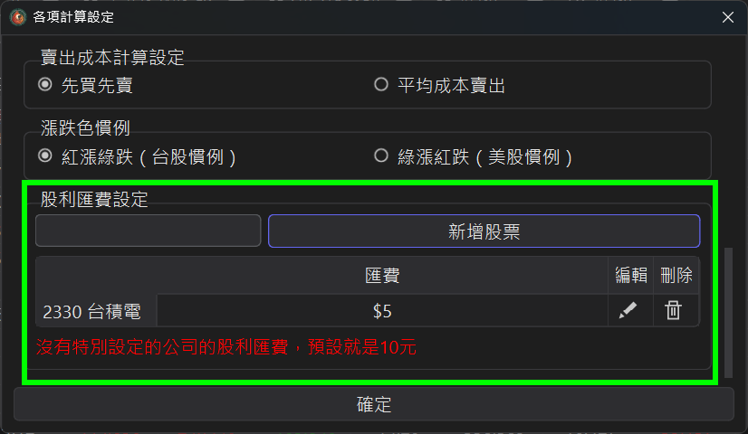
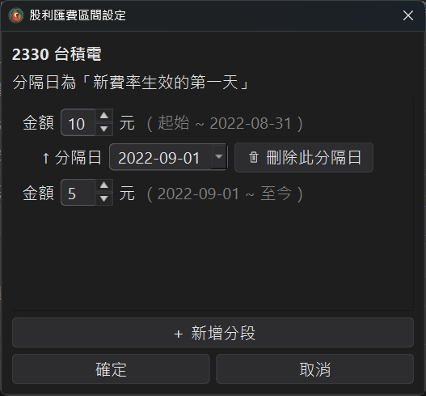
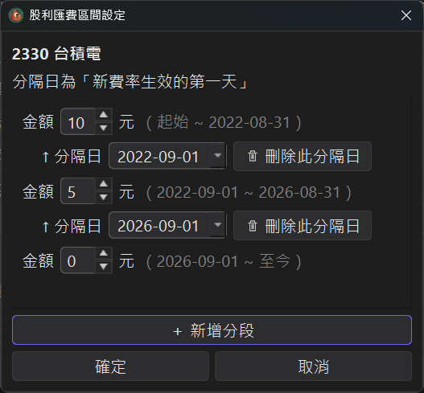
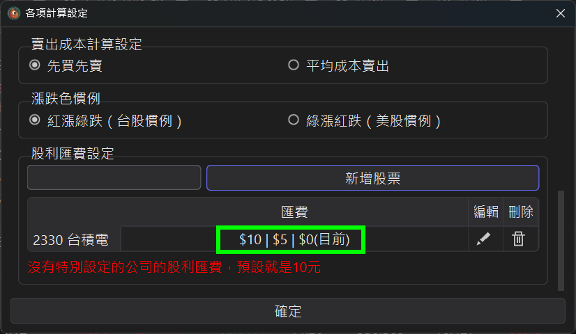

動態匯費設定
領取現金股利或現金減資退回款時，券商 / 銀行會收一筆匯款手續費（匯費）。這筆匯費會因為您的劵商或保管銀行不同而有所差異。
而若是您在持有該支股票期間更換過保管銀行，那匯費金額也有可能會有變動。
StockKeeper 支援每檔股票自訂不同時間區間的匯費金額，
讓歷年每一筆股利的成本計算都更貼近實際。
1、從哪裡進入設定
開啟上方各項計算設定， 往下捲動找到股利匯費設定區塊。
● 在輸入框輸入股票代碼或名稱，按 新增股票，即可為該檔建立匯費設定。
● 已建立的股票會列在下方清單，點右側的編輯（鉛筆）可修改、 刪除（垃圾桶）可移除。
● 沒有特別設定的股票，匯費一律預設為 10 元。

2、只收固定匯費的情況
若某檔股票的匯費長期都一樣（例如固定 5 元）， 只要在區間設定裡填一個金額即可， 清單會直接顯示該金額（如 $5）。
3、設定隨時間變動的匯費
當匯費在某個時間點調整過，就用分段來表達。 重點只有一個觀念：
● 分隔日 = 新費率生效的第一天， 上一段就結束在分隔日的前一天。
操作方式：在區間設定對話框按 + 新增分段 會多出一個 分隔日與一個金額； 設定各段金額、並選好分隔日期即可。要移除某個切點，按該分隔日旁的 刪除此分隔日，前後兩段會自動合併。
下圖範例：2022-09-01 起匯費由 10 元改為 5 元 —— 填兩個金額 10、5， 分隔日選 2022-09-01。 系統即認定 2022-08-31（含）以前算 10 元，2022-09-01（含）以後算 5 元。

需要更多轉折就繼續新增分段。 下圖為三段：10 元 →（2022-09-01）→ 5 元 →（2026-09-01）→ 0 元。

4、清單怎麼看
設定完成後，清單會用 $10 | $5 | $0(目前) 這樣的方式， 依時間先後把各段金額由早到晚列出， 並在目前生效的那一段標上 (目前)，一眼就能確認現在套用的是哪個費率。

5、每筆股利用哪一天的費率
● 現金股利：以現金股利發放日 （實際入帳扣費的時間點）決定套用哪一段匯費；若該筆沒有發放日資料（例如手動輸入的股利）， 則改用除權息日。
● 現金減資退回款：以減資日決定， 且與現金股利共用同一組時間區間設定。